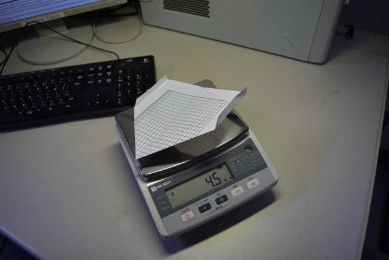

| ・ 第一回飛行機コンテスト (H27.5.27) | ||||||||||||||||||||||||||||||||||||||
計測1号から1ヶ月ほど経ちました。さて、恒例の飛行機コンテストを開催。機体のレギュレーションは無尾翼機ということだけ。コンテストは滞空時間を競うというもの。動力は第2回からと思っていましたが、制御なし動力ありでH谷川くん参戦。 |
||||||||||||||||||||||||||||||||||||||
|
計測2号（動力あり、制御なし、H谷川くんとA堀くん） 動力はA堀くん提供。急遽10分くらいで製作。 |
計測1.5号（動力なし、H谷川くん） 機首がもげて滑空に。動力飛行で良く飛んでいた模様。 | |||||||||||||||||||||||||||||||||||||
|

良く飛ぶ折り紙飛行機（動力なし、東先生） 自信の良く飛ぶ飛行機 |
計測1.25号（動力なし、助教の人） 表面をやすってツルツルにしてます。速い！ | |||||||||||||||||||||||||||||||||||||
|
すごい嬉しそうなH谷川くん |
飛んでるイメージが大事だそうです | |||||||||||||||||||||||||||||||||||||
|
ブーン |
調整 | |||||||||||||||||||||||||||||||||||||
|
ロボ研も応援に |
計測2号。柵に衝突！ | |||||||||||||||||||||||||||||||||||||
|
計測1.5号、なんか重い |
計測2号。柵が近い（F5で動きます） | |||||||||||||||||||||||||||||||||||||
|
計測1.25号 速度はピカイチ |
飛びすぎた2号を回収 | |||||||||||||||||||||||||||||||||||||
|
ゆっくり離す感じでOK |
飛びすぎ | |||||||||||||||||||||||||||||||||||||
|
人が増えてきたのでオシマイ |
優勝はH谷川くん！次は制御ありでどこまでも。 滑空で、東先生の良く飛ぶ折り紙飛行機が10秒越えました。 | |||||||||||||||||||||||||||||||||||||
|
満足げ |
翼下面に配線するよね？ | |||||||||||||||||||||||||||||||||||||
|
またやろう |
次は制御付きで | |||||||||||||||||||||||||||||||||||||
|
ん、まぁ優勝するには、 |
一生懸命やることちゃうかな？ | |||||||||||||||||||||||||||||||||||||
|
H谷川くんの席にディスプレイが |
すごい誇らしげです | |||||||||||||||||||||||||||||||||||||